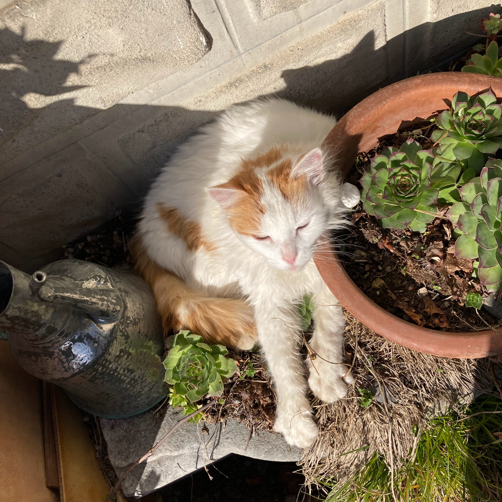
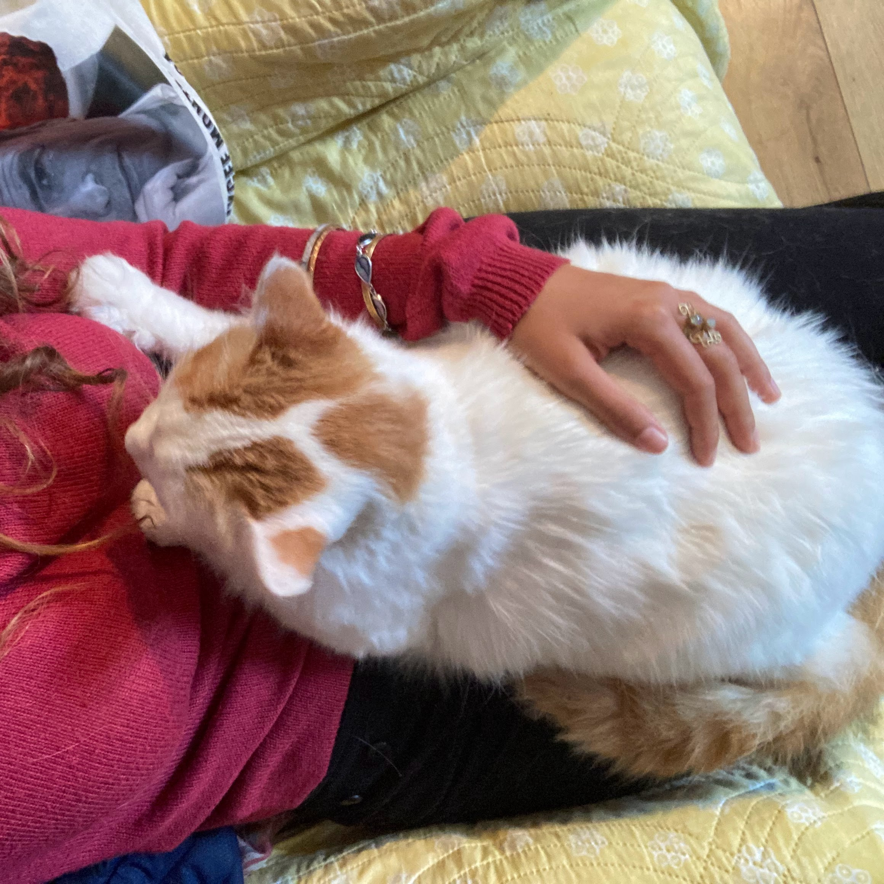
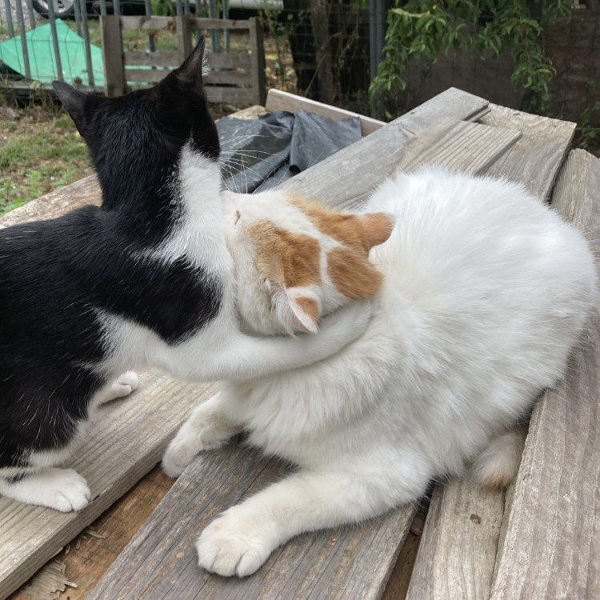
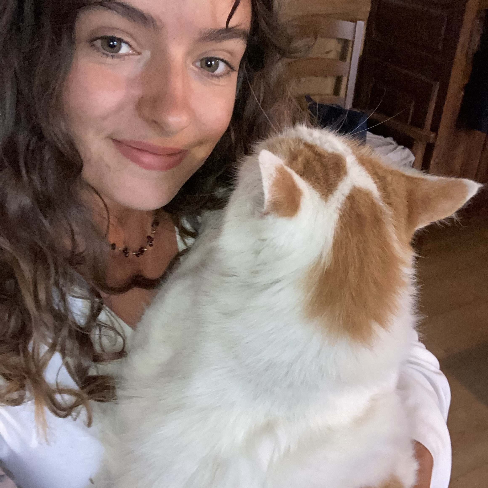
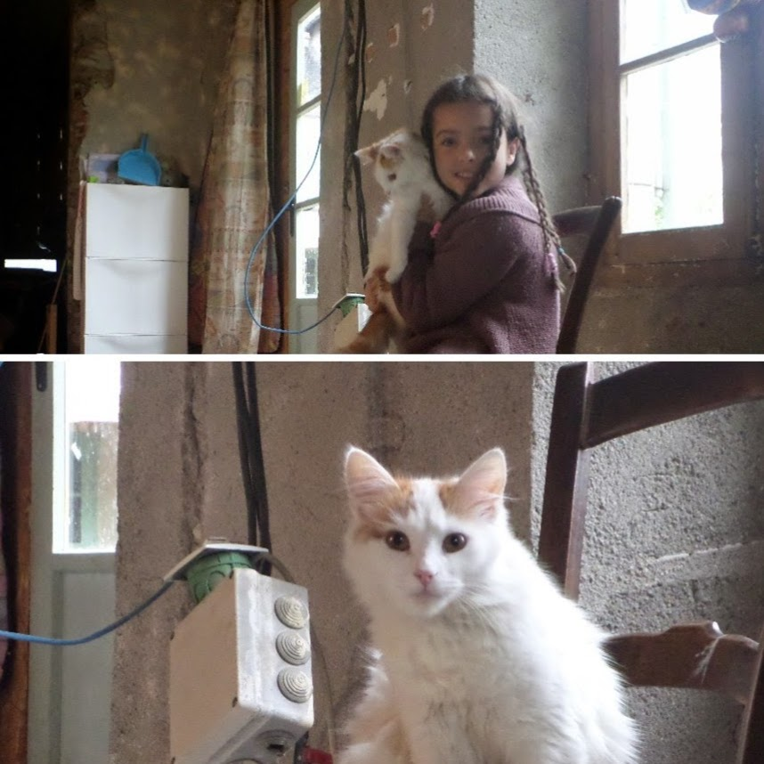
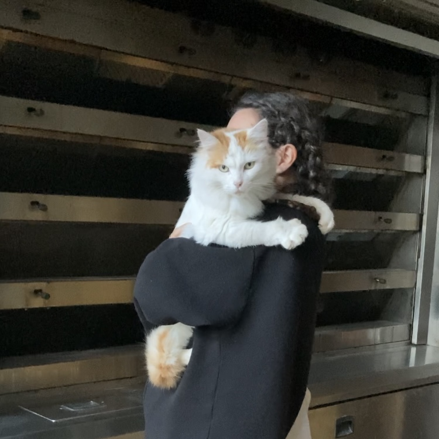
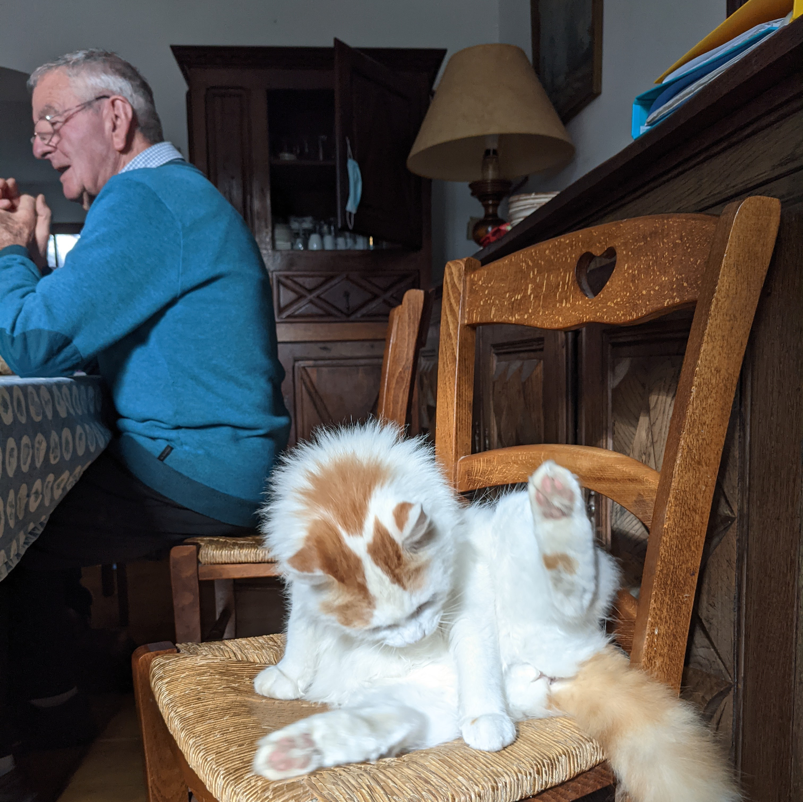
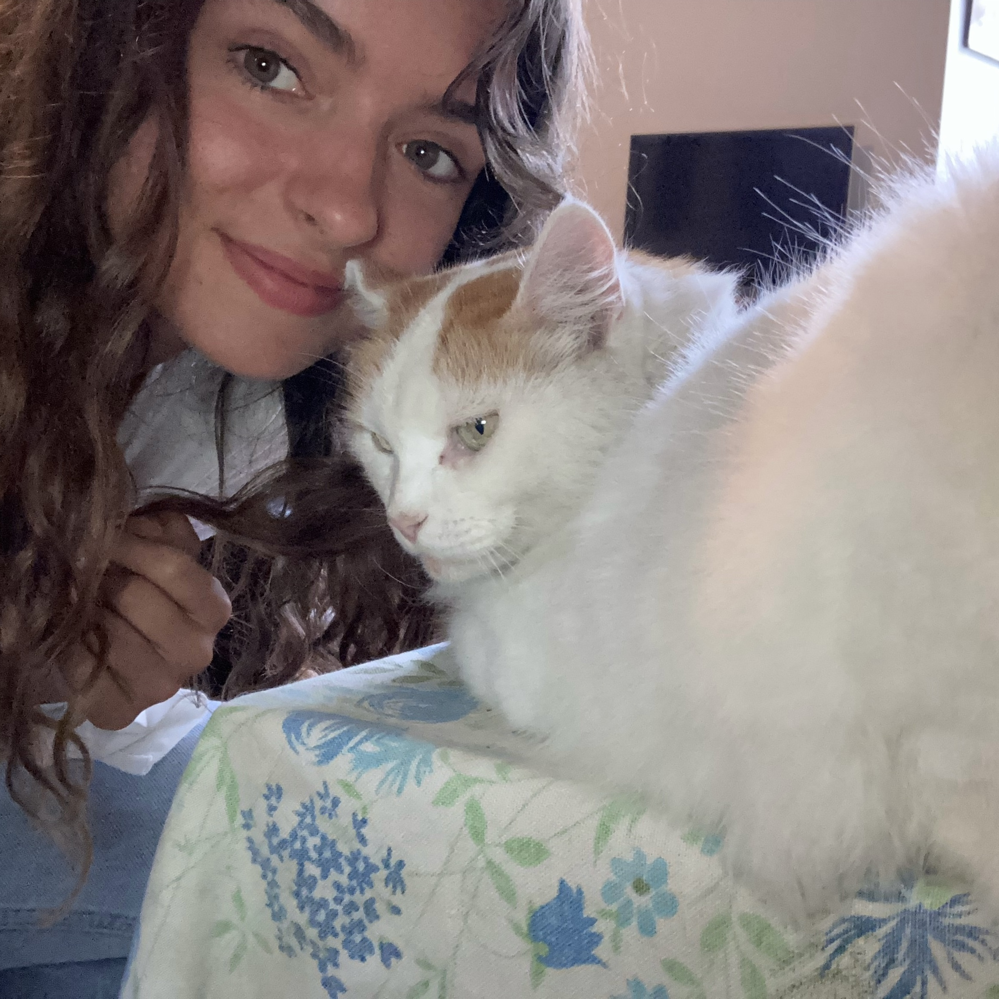

Une photo de moi :


Je suis un chat de goutière blanc et roux. Je bave un peu mais je suis mignonne.
| infos perso | |
|---|---|
| âge : | 11 ans |
| poids : | plume |
| caractéristiques : | poil soyeux, mange de la pate à pain, emmerde les mioches |

En plein combat contre un chaton qui m'a provoqué.

| infos perso | |
|---|---|
| prénom : | Camille |
| âge : | 20 ans (elle est vieille) |
| CV : | CV de Camille |
| caractéristiques : | folle, susceptible, veut toujours me faire des calins |

Je suis née dans la maison voisine le 15 décembre 2012 avant d'être adoptée 2 mois plus tard par ma famille. On m'a appelé Caline mais ma maitresse Camille voulait m'appeler Tartine (personne n'était d'accord avec elle...) J'ai vécu nourris exclusivement de pate à pain comme je suis arrivée en même temps que la création de la boulangerie familiale.


J'ai été maman en 2014 et j'ai donné naissance à 6 chatons avec mon amoureux Carou, l'autre chat de la famille.

Je continue ma vie toujours dans la maison familiale et tout le monde s'occupe de moi ! (je fais également du hiphop)
